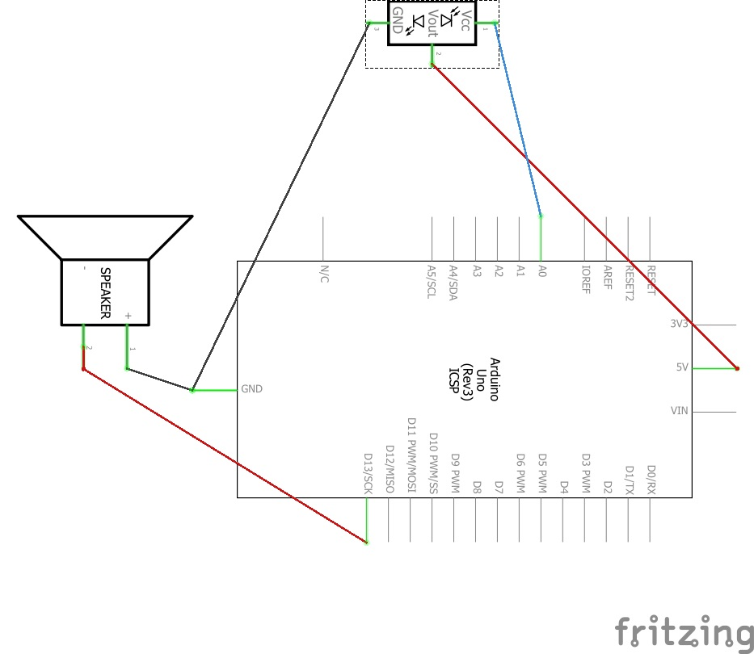
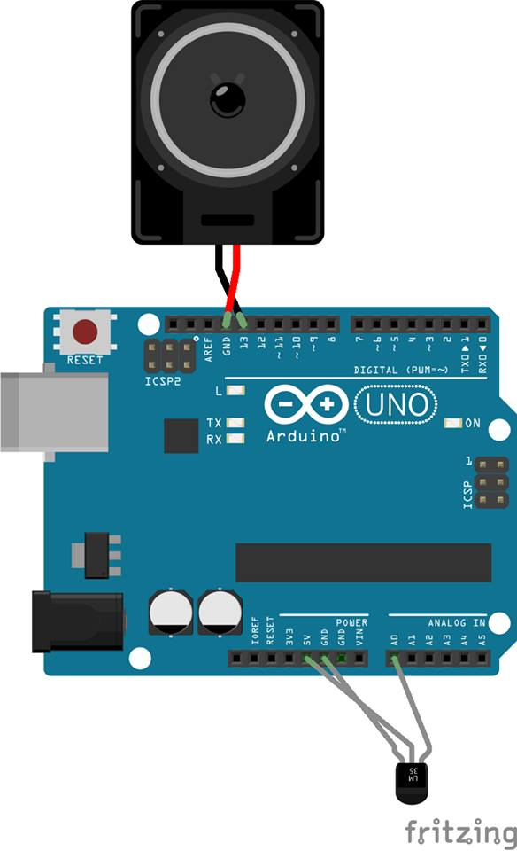
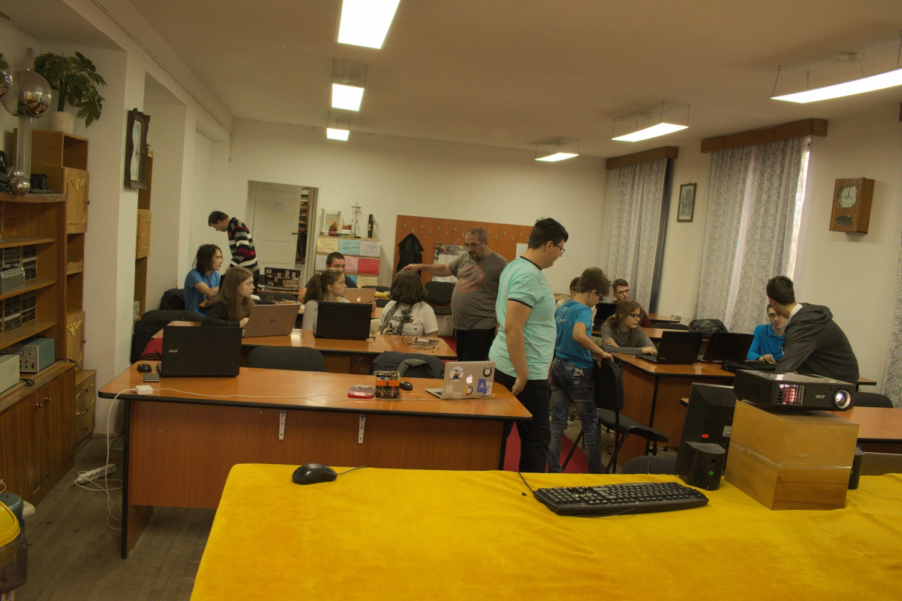
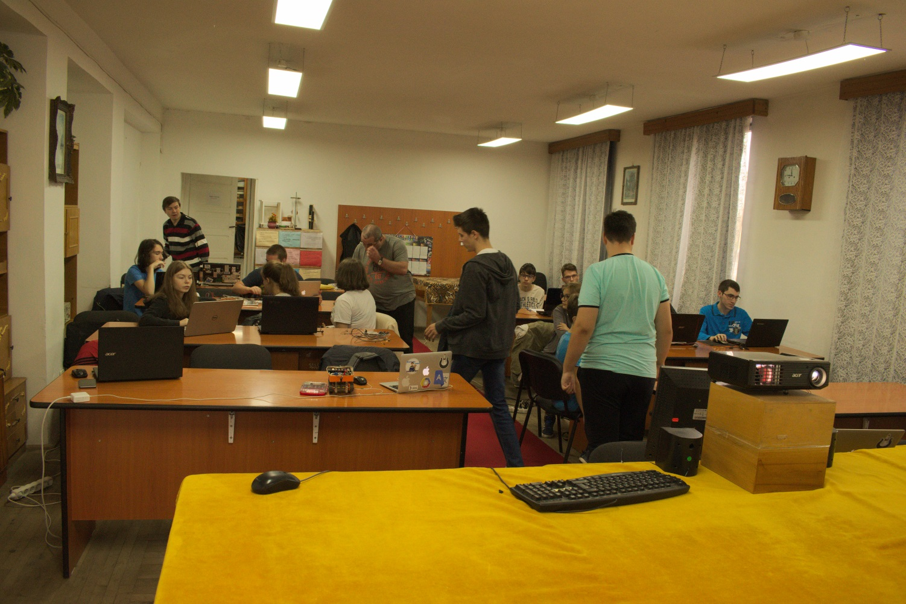
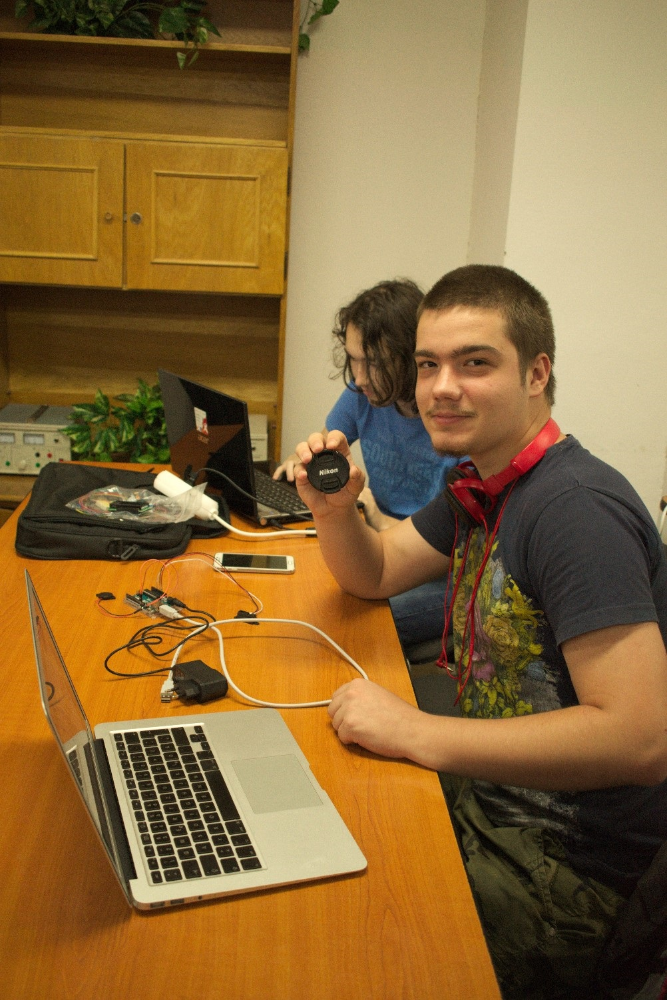

It emits sounds depending on the distance to an object detected by the distance sensor
Proximity Sound
Sunday, September 24th 2017, the GDRH team met up for the first time in the school's Physics laboratory.
It was decided that the name of the project would be Proximity Sound.
After that, the team was formed and the roles were assigned to each and every member.
In order to make the project, we needed the following: an Arduino board, a speaker and a distance sensor.
After establishing the components, a diagram was made which would later be used during the assembly of the project.


The team split up in order to make the source code and to take photos of the progress of the project.
The work started on the programming stage of the project.



If at first, the team created a code to make the speaker emit a sound if an unknown object would be in the sensor's range, in the second phase, the sound emitted by the speaker would change its frequency depending on the distance to the unknown object.
The project has a README file on GitHub, where the source code is located as well, in order to enable other team members and highschool students replicate it too.